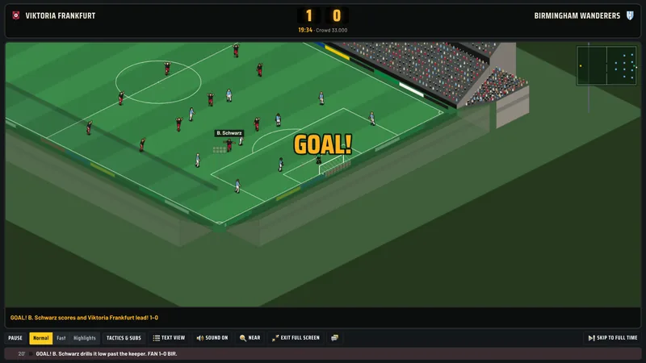

The lab
Small things built with AI, and what each one taught me.
Built by Kevin Logist and Claude
FADE IN:
INT. The lab – weekend
A laptop, a coffee and an AI model that never gets tired. KEVIN is not a developer. He is building a football game anyway.
Kevin
(to us)
I test AI on myself before I recommend it to a team.
Kevin (V.O.)
Everything here is built by me and Claude, an AI model, without a developer in the room. And no, I’m not starting a game studio. Building something real is simply the fastest way I know to learn where AI helps, where it bluffs, and what that means for a marketing team. Each build ends with what it taught me.
Insert – Matchnight

Featured. In development. A football club manager where your own results write the story. Take any of 92 English clubs up the leagues, build the stadium, and watch every match play out on an isometric pitch. Planned for PC on Steam and for Android.
Kevin
(the lesson)
What it takes to go from an idea to a product with real players, as a team of one plus AI.
Insert – Voidfall
Browser prototype. A sci-fi action RPG that runs in the browser.
Kevin
(the lesson)
How far you can push AI on a genre you love before the quality starts to slip.
EXT. The cutting room floor – night
Not every experiment survives. The ones that didn’t will get an honest field note, because killing your darlings is a marketing skill too.